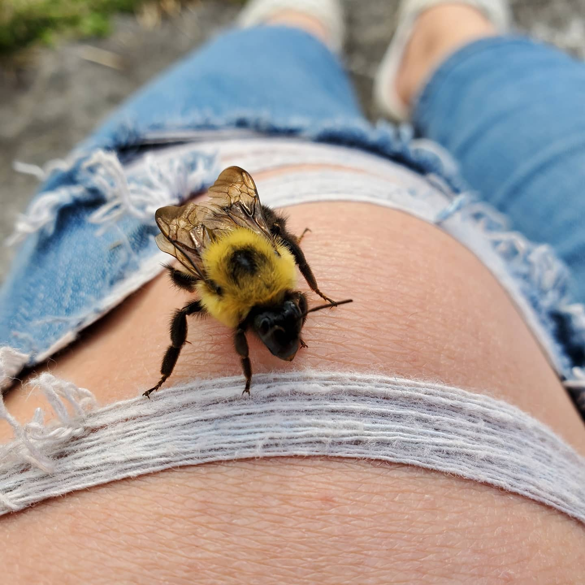
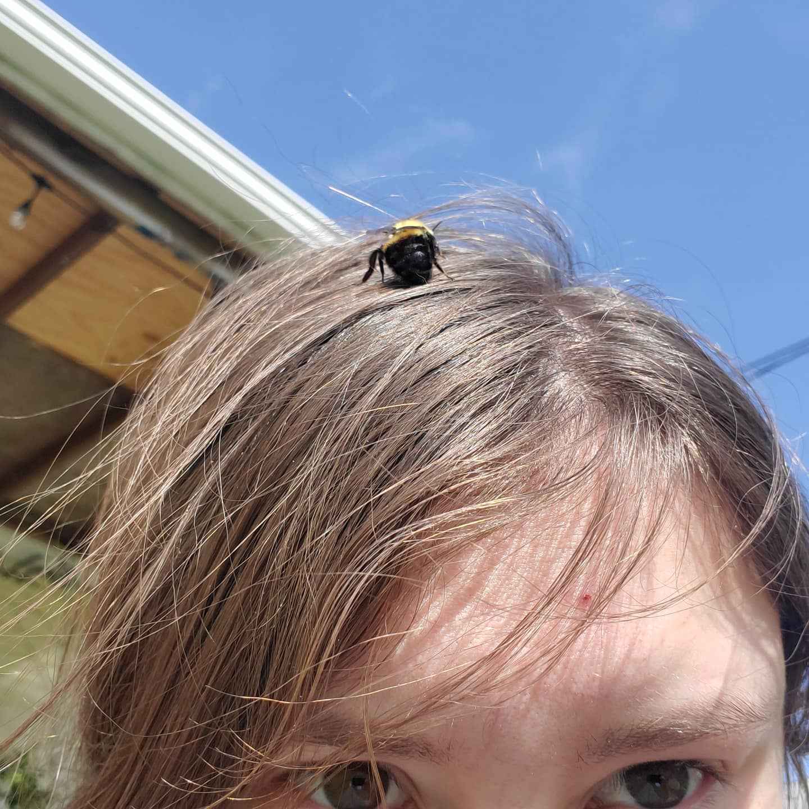
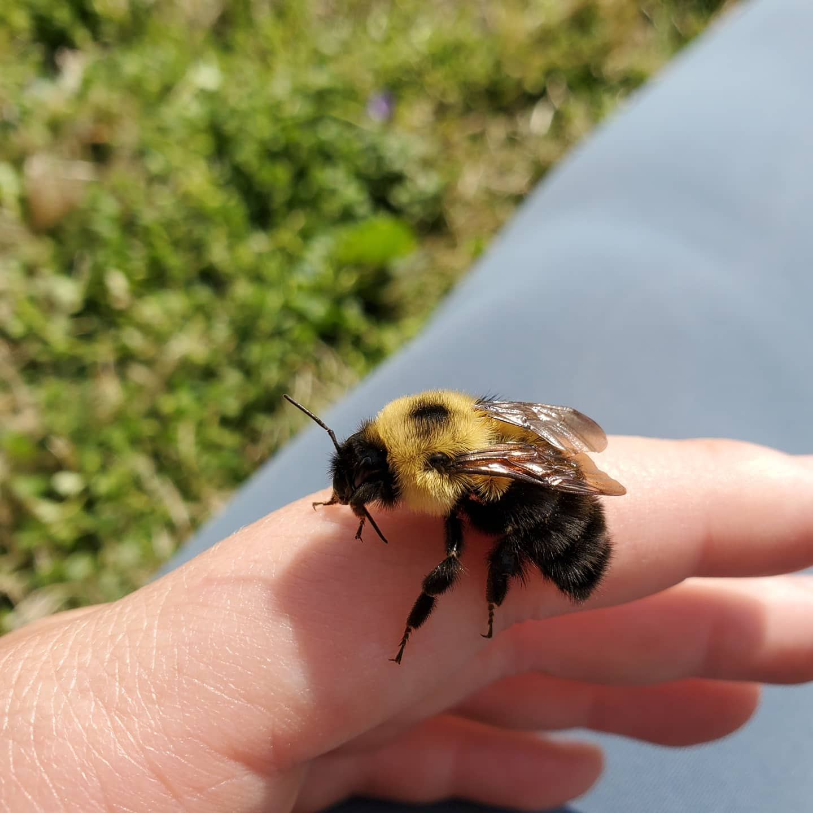

Bees, Bees, Bees (&& my eccentricities)!
I enjoy cultivating new plants and supporting bee populations near my home with a variety of wildflowers, fruits, and vegetables!
This has led to some particularly wonderful encounters with a multitude of bees that feel comfortable visiting my home!



I am incredibly grateful for the opportunity to befriend such gentle creatures and have them feel comfortable enough to interact with me!